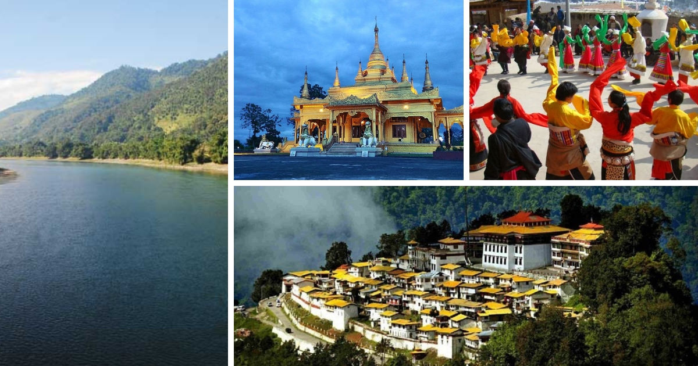

Arunachal Pradesh is the northeasternmost state of India.
It borders the states of Assam and Nagaland to the south.
It shares international borders with Bhutan in the west,
Myanmar in the east, and a disputed border with China in
the north at the McMahon Line.
Capital: Itanagar
Union territory: 21 January 1972
Population: 12.6 lakhs (2012)
Chief minister: Pema Khandu

Climate
Due to the topographical diversity, the climate in
Arunachal Pradesh ranges from sub-tropical to temperate
depending upon the altitude. The regions in the lower belts of
the state experience hot and humid climates, with a maximum
temperature in the foothills reaching up to 40 °C (during the summer).
Best time to visit
The best time to visit Arunachal Pradesh is early March or early October because the rest of year is hot, cold and rainy.
How can you reach Arunachal Pradesh?
Best way to reach Arunachal Pradesh by rail is to come into Guwahati
Railway station and continue onwards by train to Naharlagun. Guwahati
enjoys the best connectivity in the region with the rest of the country.
You can reach Guwahati from major cities such as Mumbai, Bengaluru,
Chennai, Delhi and Kolkata.
Click to go Back to Home